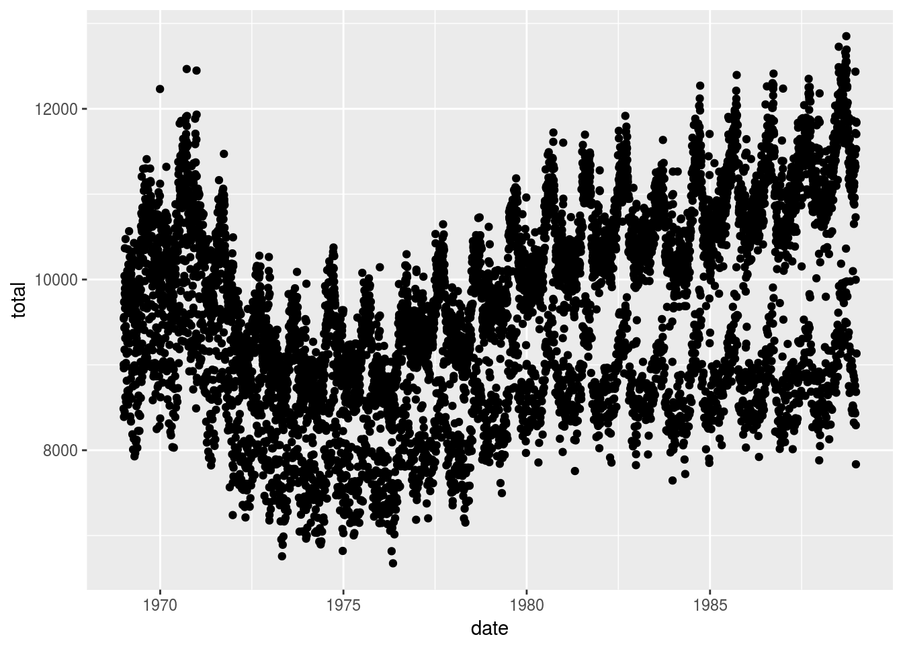
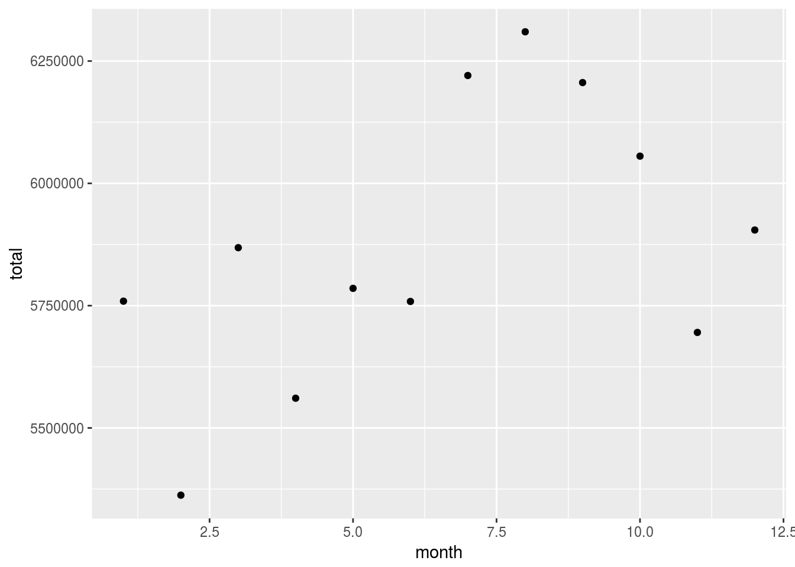

The purpose of this project is to analyze any possible relationship between birthdays and holidays. We’ll use the R libraries dplyr, ggplot2, lubridate, as well as the Birthdays data set from the mosaicData library.
First we will draw a plot measuring the number of births for each day in our time frame.
DailyBirths <- Birthdays %>%
group_by(date) %>%
summarise(total = sum(births))
DailyBirths %>%
ggplot(aes(x=date, y = total)) + geom_point()
Next we draw a similar plot, only this time measured by week of the year.
WeeklyBirths <- Birthdays %>%
mutate(week = week(date)) %>%
group_by(week) %>%
summarise(total = sum(births))
WeeklyBirths %>%
ggplot(aes(x=week, y = total)) + geom_point()Now by month of the year.
MonthlyBirths <- Birthdays %>%
mutate(month = month(date)) %>%
group_by(month) %>%
summarise(total = sum(births))
MonthlyBirths %>%
ggplot(aes(x=month, y = total)) + geom_point()
Here we plot by day of the year.
YDailyBirths <- Birthdays %>%
mutate(yday = yday(date)) %>%
group_by(yday) %>%
summarise(total = sum(births))
head(YDailyBirths)## # A tibble: 6 × 2
## yday total
## <dbl> <int>
## 1 1 160369
## 2 2 169896
## 3 3 180036
## 4 4 182854
## 5 5 184145
## 6 6 186726YDailyBirths %>%
ggplot(aes(x=yday, y = total)) + geom_point()Next by day of the week.
WDailyBirths <- Birthdays %>%
mutate(wday = wday(date, label = TRUE)) %>%
group_by(wday) %>%
summarise(total = sum(births))
head(WDailyBirths)## # A tibble: 6 × 2
## wday total
## <ord> <int>
## 1 Sun 8647150
## 2 Mon 10372019
## 3 Tues 10813928
## 4 Wed 10533539
## 5 Thurs 10434966
## 6 Fri 10593324WDailyBirths %>%
ggplot(aes(x=wday, y = total)) + geom_point()For the remainder of this document, we restrict to the year 1980. First we graph by day of the week for this period.
MyYear <- DailyBirths %>%
filter(year(date) == 1980) %>%
mutate(week_day = wday(date, label = TRUE))
MyYear %>%
ggplot(aes(x=date, y = total, color=week_day)) + geom_line()Finally we read in a list of holidays and overlay that information with our plot.
Holidays <- read.csv("http://tiny.cc/dcf/US-Holidays.csv", stringsAsFactors = FALSE) %>%
mutate(date = as.POSIXct(dmy(date))) %>%
mutate(week_day = wday(date, label = TRUE)) %>%
filter(year(date) == 1980)
MyYear %>%
ggplot(aes(x=date, y = total, color=week_day)) +
geom_line() +
geom_vline(data = Holidays, aes(xintercept = as.numeric(date), color = week_day)) +
geom_text(data = Holidays, mapping=aes(x = date, y = 11000, label = holiday), angle = 45, size = 3, color = "black")